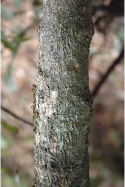
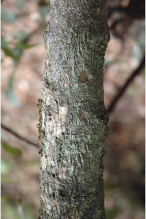
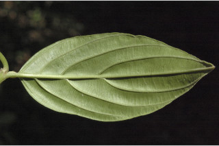
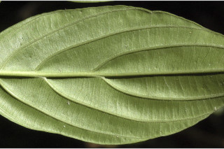
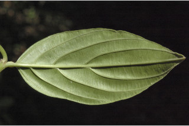
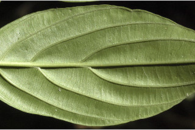
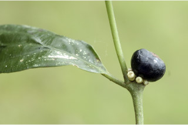
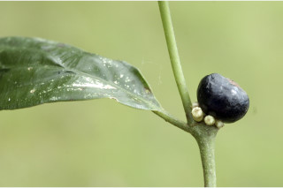

Large shrubs or small trees up to 5 m tall.
ದೊಡ್ಡ ಗಾತ್ರದ ಪೊದೆಗಳು ಅಥವಾ 5 ಮೀ. ಎತ್ತರದ ಸಣ್ಣ ಗಾತ್ರದ ಮರಗಳು.
Large shrubs or small trees up to 5 m tall.
பெரிய குத்துச்செடி அல்லது சிறிய மரம் 5 மீ. உயரம் வரை வளரக்கூடியது.
Bark brown, rough; blaze brown.
ತೊಗಟೆ ಕಂದು ಬಣ್ಣದಲ್ಲಿದ್ದು ನಯವಾಗಿರುತ್ತದೆ;ಕಚ್ಚು ಮಾಡಿದ ಜಾಗ ಕಂದು ಬಣ್ಣ.
Bark brown, rough; blaze brown.
மரத்தின் பட்டை ப்ரவுன், சொரசொரப்பானது; உள்பட்டை ப்ரவுன்.
Branches horizontal; branchlets subterete to compressed, puberulous when young, later glabrous.
ಕಿರುಕೊಂಬೆಗಳು ಕಾಂಡದ ಲಂಬ ರೇಖೆಗೆ ಸಮಕೋನದಲ್ಲಿರುತ್ತವೆ;ಕಿರುಕೊಂಬೆಗಳು ಉಪ-ದುಂಡಾಗಿರುವುದರಿಂದ ಸಂಕುಚಿತವರೆಗಿನ ಆಕಾರ ಹೊಂದಿರುತ್ತವೆ ,ಎಳೆಯದಾಗಿದ್ದಾಗ ಸೂಕ್ಷ್ಮ ಮೃದುತುಪ್ಪಳದಿಂದ ಕೂಡಿರುತ್ತವೆ,ನಂತರ ರೋಮರಹಿತವಾಗಿರುತ್ತವೆ.
Branches horizontal; branchlets subterete to compressed, puberulous when young, later glabrous.
கிளைகள் நிலத்திற்கு இணையானவை; சிறியநுனிக்கிளைகள் குறுக்குவெட்டுத் தோற்றத்தில் கிட்டதட்ட வளையமானது முதல் தட்டையானது, இளம்பருவத்தில் நுண்ணிய உரோமங்களுடையது, முதிரும் போது உரோமங்களற்றது.
Leaves simple, opposite, decussate; stipule small, triangular, interpetiolar, persistent; petiole 0.7 cm long, planoconvex in cross section, glabrous; lamina 6 x 2.5 cm, elliptic-oblong to obovate, apex abruptly acuminate with mucronate tip, base acute, margin entire, subcoriaceous, glabrous; midrib slightly raised or flat above; secondary_nerves 3-4 pairs; tertiary_nerves horizontally closely percurrent.
ಎಲೆಗಳು ಸರಳವಾಗಿದ್ದು ಕತ್ತರಿಯಾಕಾರದ ಅಭಿಮುಖ ಜೋಡನಾ ವ್ಯವಸ್ಥೆ -ಯಲ್ಲಿರುತ್ತವೆ; ಕಾವಿನೆಲೆಗಳು ಸಣ್ಣ ಗಾತ್ರದಲ್ಲಿದ್ದು ತ್ರಿಕೋನದ ಆಕಾರ ಹೊಂದಿದ್ದು ತೊಟ್ಟುಗಳ ನಡುವೆ ಇರುತ್ತವೆ ಹಾಗೂ ಶಾಶ್ವತವಾಗಿರುತ್ತವೆ;ತೊಟ್ಟು 0.7 ಸೆಂ.ಮೀ. ವರೆಗಿನ ಉದ್ದವಿದ್ದು, ಅಡ್ಡ ಸೀಳಿದಾಗ ಸಪಾಟ ಪೀನ ಮಧ್ಯದ ಆಕಾರ ಹೊಂದಿರುತ್ತದೆ, ರೋಮರಹಿತವಾಗಿರುತ್ತವೆ;ಪತ್ರಗಳು 6 X 2.5 ಸೆಂ.ಮೀ. ಗಾತ್ರ ಹೊಂದಿದ್ದು ಅಂಡವೃತ್ತ-ಚತುರಸ್ರದಿಂದ ಬುಗುರಿಯವರೆಗಿನ ಆಕಾರ ಹೊಂದಿದ್ದು, ಅಗ್ರದಲ್ಲಿ ಮೊನಚು ಮುಳ್ಳುಳ್ಳ ಥಟ್ಟನೆ ಕ್ರಮೇಣ ಚೂಪಾಗುವ ಮಾದರಿಯ ತುದಿ, ಚೂಪಾದ ಬುಡ, ನಯವಾದ ಅಂಚು,ಉಪತೊಗಲನ್ನೋಲುವ ಮೇಲ್ಮೈ ಹೊಂದಿದ್ದು ರೋಮರಹಿತವಾಗಿರುತ್ತವೆ; ಮಧ್ಯನಾಳ ಪತ್ರದ ಮೇಲ್ಭಾಗದಲ್ಲಿ ತುಸುವಾಗಿ ಮೇಲೆದ್ದಿರುತ್ತದೆ ಅಥವಾ ಚಪ್ಪಟೆಯಾಗಿರುತ್ತದೆ;ಎರಡನೇ ದರ್ಜೆಯ ನಾಳಗಳು 3 ರಿಂದ 4 ಜೋಡಿಗಳಿರುತ್ತವೆ; ಮೂರನೇ ದರ್ಜೆಯ ನಾಳಗಳು ಎಲೆ ದಿಂಡಿಗೆ ಸಮಕೋನದಲ್ಲಿದ್ದು ಕಡಿಮೆ ಅಂತರ ಹೊಂದಿದ್ದು ಎಲೆಯ ದಿಂಡಿಗೆ ಅಡ್ಡವಾಗಿ ಕೂಡುತ್ತವೆ.
Leaves simple, opposite, decussate; stipule small, triangular, interpetiolar, persistent; petiole 0.7 cm long, planoconvex in cross section, glabrous; lamina 6 x 2.5 cm, elliptic-oblong to obovate, apex abruptly acuminate with mucronate tip, base acute, margin entire, subcoriaceous, glabrous; midrib slightly raised or flat above; secondary_nerves 3-4 pairs; tertiary_nerves horizontally closely percurrent.
இலைகள் தனித்தவை, எதிரடுக்கமானவை, குறுக்குமறுக்கானவை; இலையடிச்செதில் சிறியவை, முக்கோணமானது, இலையடிச்செதில் இருஇலைக்காம்பிற்கு நடுவே (இண்டர்பீட்டியோலார்) உடையது, நிரந்தரமானது; இலைக்காம்பு 0.7 செ.மீ. நீளமானது, குறுக்குவெட்டுத் தோற்றத்தில் பிளேனோகான்வக்ஸ், உரோமங்களற்றது; இலை அலகு 6 X 2.5 செ.மீ., நீள்வட்டம்-நீள்சதுர வடிவானது முதல் தலைகீழ் முட்டை வடிவானது, அலகின் நுனி சிறிய அதிக்கூரியதுடன் அதன் முனை மூயூக்கரனேட், அலகின் தளம் கூரியது, அலகின் விளிம்பு முழுமையானது, சப்கோரியேசியஸ், உரோமங்களற்றது; மையநரம்பு மேற்புறத்தில் அலகின் பரப்பைவிட சிறிது உயர்ந்து இருக்கும் அல்லது அலகின் பரப்பிற்கு சமமானது; இரண்டாம் நிலை நரம்புகள் 3-4 ஜோடிகள்; மூன்றாம் நிலை நரம்புகள் விளிம்பு நோக்கிய இணையான நெருக்கமான பெர்க்கரண்ட்.
Inflorescence cymes, axillary or from leafless branches; flowers sessile, white.
ಪುಷ್ಪಮಂಜರಿಗಳು ಮಧ್ಯಾರಂಭಿ ಮಾದರಿಯವುಗಳಾಗಿದ್ದು ಅಕ್ಷಾಕಂಕುಳಿನಲ್ಲಿ ಅಥವಾ ಎಲೆರಹಿತ ಕೊಂಬೆಗಳ ಮೇಲಿರುತ್ತವೆ; ಹೂಗಳು ತೊಟ್ಟು ರಹಿತವಾಗಿದ್ದು ಬಿಳಿ ಬಣ್ಣದಲ್ಲಿರುತ್ತವೆ.
Inflorescence cymes, axillary or from leafless branches; flowers sessile, white.
மஞ்சரி சைம் வகை மஞ்சரி, இலைக்கோணங்களில் அல்லது இலைகளற்ற கிளைகளில் காணப்படுபவை; மலர்கள் காம்பற்றது, வெள்ளை நிறமானது.
Drupe, globose, surmounted with persistent calyx lobes, dark purple when ripe; seeds 4.
ಡ್ರೂಪ್ಗಳು ಗೋಳಾಕಾರದಲ್ಲಿದ್ದು ಅಗ್ರದಲ್ಲಿ ಶಾಶ್ವತವಾದ ಪುಷ್ಪಪಾತ್ರೆಯ ಎಸಳುಗಳನ್ನು ಹೊಂದಿರುತ್ತವೆ,ಕಳಿತಾಗ ಕಡು ಕೆನ್ನೀಲಿ ಬಣ್ಣ ಹೊಂದಿರುತ್ತವೆ;ಬೀಜಗಳ ಸಂಖ್ಯೆ 4.
Drupe, globose, surmounted with persistent calyx lobes, dark purple when ripe; seeds 4.
உள்ளோட்டுத்தசைகனி (ட்ரூப்), கோள வடிவமானது, கனியின் நுனியில் நிரந்தரமான புல்லி இதழ்கள் உடையது, கனியும் போது கரும்பர்புள் நிறமானது; விதைகள் 4.

 


 




 
